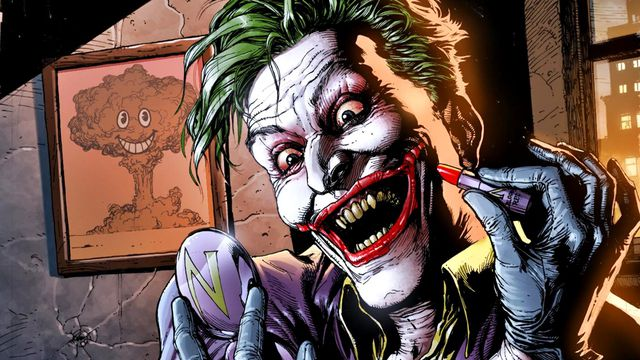
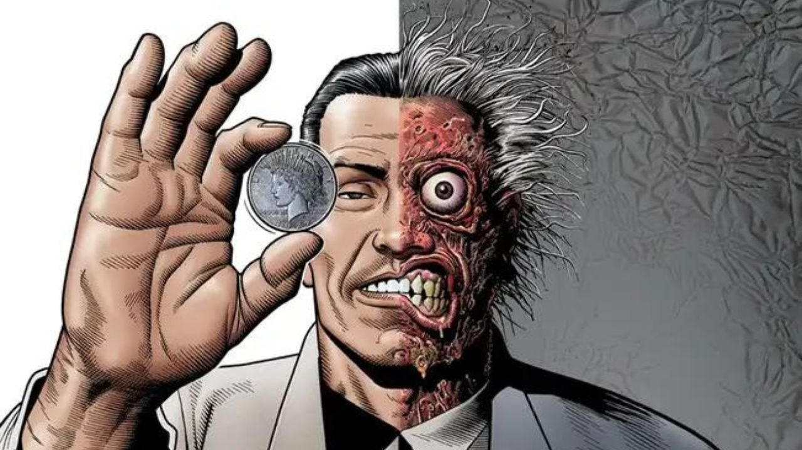
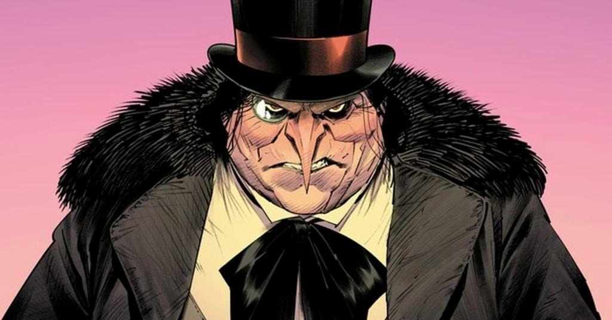

1. CORINGA
Sua primeira aparição foi em Batman #1, em 1940.
*Nome verdadeiro: geralmente desconhecido..
*Já teve várias origens diferentes nos quadrinhos.
*Nome verdadeiro: geralmente desconhecido.

Sua primeira aparição foi em Batman #1, em 1940.
*Nome verdadeiro: geralmente desconhecido..
*Já teve várias origens diferentes nos quadrinhos.
*Nome verdadeiro: geralmente desconhecido.

*antes de se tornar vilão, Harvey Dent era um importante aliado do Batman e atuava como promotor de Gotham.
*Suas decisões são frequentemente determinadas pelo lançamento da moeda.
*O personagem estreou em 1942.

*seu nome verdadeiro é Oswald Cobblepot.
*Primeira aparição: Detective Comics #58 (1941).
*Diferentemente de muitos vilões, costuma atuar como chefe do crime organizado.

*Seu nome verdadeiro é Pamela Isley.
*Primeira aparição: Batman #181 (1966).
*É conhecida por defender a natureza de maneira extrema em várias histórias..

*Seu nome verdadeiro é Jonathan Crane.
*Primeira aparição: World's Finest Comics #3 (1941).
*É um ex-psicólogo obcecado pelo medo que usa uma máscara assustadora e sua famosa toxina do medo para causar alucinações terríveis em Gotham City.

*Seu nome verdadeiro é Edward Nygma.
*Primeira aparição: Detective Comics #140 (1948).
*É um criminoso genial e obsessivo de Gotham City que desafia o Batman com enigmas, quebra-cabeças e armadilhas complexas.

*É um dos poucos inimigos que conseguiu descobrir a identidade secreta do Batman em algumas histórias.
*Primeira aparição: Batman: Vengeance of Bane #1 (1993).
*É conhecido por sua força brutal ampliada pela droga Venom e por sua inteligência genial. Ele entrou para a história dos quadrinhos como "o homem que quebrou o Morcego" ao lesionar a coluna do herói.

*Seu nome verdadeiro é Selina Kyle.
*Primeira aparição: Batman #1 (1940).
*É uma ladra habilidosa e ágil, conhecida por seu traje de gato e sua relação complexa com o Batman.

*Seu nome verdadeiro é Victor Fries.
*Primeira aparição: Batman #121 (1959).
*É um cientista que se tornou um vilão após um acidente que o obrigou a viver em temperaturas extremamente baixas, usando uma armadura refrigerada.

*Seu nome significa "Cabeça do Demônio".
*Primeira aparição: Batman #232 (1971).
*É um vilão com uma visão distorcida de justiça, buscando criar um mundo melhor através de métodos extremos e muitas vezes violentos.